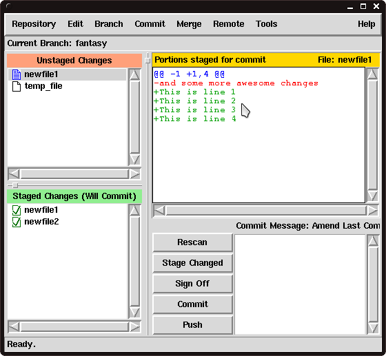

Week 5"Splitting up commits the easy way"
Taking commits that little bit further
Sometimes, putting everything in a single commit just is not a good idea.
Imagine you have pulled in number of updates to your working directory.
You may want to split these up.
It is true that you could simply git add only the files you want to include in the commit.
However, what happens when you have change four or five different things in the same file, and you want to split that commit up into five different commits.
There are two ways you can approach this.
The first is to copy the file in question out of the working directory, reset the working copy back to the last committed and copy your changes in line by line.
This can be time consuming and frustrating and when you are working on many files, it can be totally impractical.
What we need is a way to include or exclude certain lines of a file.
To demonstrate this we are going to create a new branch called fantasy and we are going to make several changes to a few files.
We are then going to show how the same process can be achieved by using both the GUI and the command line.
So let us start by creating our branch and making some changes as shown below.
john@satsuki:~/coderepo$ git checkout -b fantasy
Switched to a new branch 'fantasy'
john@satsuki:~/coderepo$ echo "This is line 1" > newfile1
john@satsuki:~/coderepo$ echo "This is line 2" >> newfile1
john@satsuki:~/coderepo$ echo "This is line 3" >> newfile1
john@satsuki:~/coderepo$ echo "This is line 4" >> newfile1
john@satsuki:~/coderepo$ echo "This is a new line" >> newfile2
john@satsuki:~/coderepo$ echo "This is another new line" >> newfile2
Let us now just run a git diff to see exactly what the changes are.
john@satsuki:~/coderepo$ git diff
diff --git a/newfile1 b/newfile1
index 44640b2..0eccf1a 100644
--- a/newfile1
+++ b/newfile1
@@ -1,2 +1,4 @@
-A new file
-and some more awesome changes
+This is line 1
+This is line 2
+This is line 3
+This is line 4
diff --git a/newfile2 b/newfile2
index 3545c1d..40efcce 100644
--- a/newfile2
+++ b/newfile2
@@ -1,2 +1,4 @@
Another new file
and a new awesome feature
+This is a new line
+This is another new line
john@satsuki:~/coderepo$
Now, we could just do git commit -a and be done with it, but what if we really wanted to split this information up into four commits? We will introduce a new parameter to our git add tool from before.
We are going to use the git add -p or git add --patch.
This will allow us to interactively edit the hunks before they are committed.
To begin with, let us run git add -p and see what it is we need to do.
john@satsuki:~/coderepo$ git add -p
diff --git a/newfile1 b/newfile1
index 44640b2..0eccf1a 100644
--- a/newfile1
+++ b/newfile1
@@ -1,2 +1,4 @@
-A new file
-and some more awesome changes
+This is line 1
+This is line 2
+This is line 3
+This is line 4
Stage this hunk [y,n,q,a,d,/,e,?]?
We are given the options of y,n,q,a,d,/,e,?.
At first glance, this may seem rather daunting.
Let us choose the ? and see what help is presented to us.
Stage this hunk [y,n,q,a,d,/,e,?]? ?
y - stage this hunk
n - do not stage this hunk
q - quit, do not stage this hunk nor any of the remaining ones
a - stage this and all the remaining hunks in the file
d - do not stage this hunk nor any of the remaining hunks in the file
g - select a hunk to go to
/ - search for a hunk matching the given regex
j - leave this hunk undecided, see next undecided hunk
J - leave this hunk undecided, see next hunk
k - leave this hunk undecided, see previous undecided hunk
K - leave this hunk undecided, see previous hunk
s - split the current hunk into smaller hunks
e - manually edit the current hunk
? - print help
@@ -1,2 +1,4 @@
-A new file
-and some more awesome changes
+This is line 1
+This is line 2
+This is line 3
+This is line 4
Stage this hunk [y,n,q,a,d,/,e,?]?
So it appears that Git is offering us the opportunity to either
- Stage it
- Do not stage it
- Quit,
- Stage it and all remaining hunks
- Do not stage it or any of the remaining ones
- Search for a regex
\item Edit the hunk
In fact, though the help mentioned a split command, we do not have this option available to us, due to the nature of our hunk.
Instead, if we wish to split this hunk, we are going to have to edit it manually.
To do this we will choose the e option.
Here we are left in our chosen text editor, to either add, modify or remove lines from the hunk.
In our case, we are going to delete a few lines.
We only want to leave the first line of additions.
Just because we delete the others does not mean they are deleted from the working copy.
Remember, we are not editing the actual files here.
Just the hunks that are going to be staged.
# Manual hunk edit mode -- see bottom for a quick guide
@@ -1,2 +1,4 @@
-A new file
-and some more awesome changes
+This is line 1
+This is line 2
+This is line 3
+This is line 4
# ---
# To remove '-' lines, make them ' ' lines (context).
# To remove '+' lines, delete them.
# Lines starting with # will be removed.
#
# If the patch applies cleanly, the edited hunk will immediately be
# marked for staging. If it does not apply cleanly, you will be given
# an opportunity to edit again. If all lines of the hunk are removed,
# then the edit is aborted and the hunk is left unchanged.
After the deletes, the editors file should look like this.
# Manual hunk edit mode -- see bottom for a quick guide
@@ -1,2 +1,4 @@
-A new file
-and some more awesome changes
+This is line 1
# ---
# To remove '-' lines, make them ' ' lines (context).
# To remove '+' lines, delete them.
# Lines starting with # will be removed.
#
# If the patch applies cleanly, the edited hunk will immediately be
# marked for staging. If it does not apply cleanly, you will be given
# an opportunity to edit again. If all lines of the hunk are removed,
# then the edit is aborted and the hunk is left unchanged.
Once we quit our editor, we are then asked about the next hunk.
In our case, we are going to apply all of the changes to our second file during this commit.
To do this we are going to use the a option.
diff --git a/newfile2 b/newfile2
index 3545c1d..40efcce 100644
--- a/newfile2
+++ b/newfile2
@@ -1,2 +1,4 @@
Another new file
and a new awesome feature
+This is a new line
+This is another new line
Stage this hunk [y,n,q,a,d,/,e,?]? a
john@satsuki:~/coderepo$
At first glance, we do not appear to have been left with any indication that anything has taken place.
In order to perform a check we shall run out obligatory git diff, both between the working copy and the index, and between the index and the last commit.
john@satsuki:~/coderepo$ git diff
diff --git a/newfile1 b/newfile1
index f702b65..0eccf1a 100644
--- a/newfile1
+++ b/newfile1
@@ -1 +1,4 @@
This is line 1
+This is line 2
+This is line 3
+This is line 4
john@satsuki:~/coderepo$
So above, we can see that the difference between the working copy and the index, or staging area, is the last three lines that we are not ready to commit yet.
Below we can see the difference between the staging area and the last commit to the repository.
This includes the three lines that we included during our interactive commit preparation.
john@satsuki:~/coderepo$ git diff --cached
diff --git a/newfile1 b/newfile1
index 44640b2..f702b65 100644
--- a/newfile1
+++ b/newfile1
@@ -1,2 +1 @@
-A new file
-and some more awesome changes
+This is line 1
diff --git a/newfile2 b/newfile2
index 3545c1d..40efcce 100644
--- a/newfile2
+++ b/newfile2
@@ -1,2 +1,4 @@
Another new file
and a new awesome feature
+This is a new line
+This is another new line
john@satsuki:~/coderepo$
We can now commit in the normal way, and continue to edit the working copy to stage the sections we require.
The following output is shortened for brevity.
john@satsuki:~/coderepo$ git commit -m 'Added first line'
[fantasy 03bd20c] Added first line
2 files changed, 3 insertions(+), 2 deletions(-)
john@satsuki:~/coderepo$ git add -p
diff --git a/newfile1 b/newfile1
index f702b65..0eccf1a 100644
--- a/newfile1
+++ b/newfile1
@@ -1 +1,4 @@
This is line 1
+This is line 2
+This is line 3
+This is line 4
Stage this hunk [y,n,q,a,d,/,e,?]? e
john@satsuki:~/coderepo$ git commit -m 'Added second line'
[fantasy 302e3fa] Added second line
1 files changed, 1 insertions(+), 0 deletions(-)
john@satsuki:~/coderepo$ git add -p
...
...
...
We have gone through the process of editing each hunk for each commit and have performed the commits.
john@satsuki:~/coderepo$ git log
commit a59e73b1dc571318a1154aa4c2fc591ab6f1f395
Author: John Haskins <john.haskins@tamagoyakiinc.koala>
Date: Wed Apr 13 23:56:39 2011 +0100
Added fourth line
commit 3ca3d627a54418be4c2e9d9196db6ce62e2b93ff
Author: John Haskins <john.haskins@tamagoyakiinc.koala>
Date: Wed Apr 13 23:56:13 2011 +0100
Added third line
commit 302e3fa5f880a2a503235667b4c96d4dcdaa11be
Author: John Haskins <john.haskins@tamagoyakiinc.koala>
Date: Wed Apr 13 23:55:57 2011 +0100
Added second line
commit 03bd20cb8a78a28f003ab402492cf7055f21bb2e
Author: John Haskins <john.haskins@tamagoyakiinc.koala>
Date: Wed Apr 13 23:55:32 2011 +0100
Added first line
Next we are going to see how to perform exactly the same procedure using git gui.
For a start, we are going to reset our branch HEAD and our index back to their state before we made the last four commits, however we are going to leave the working copy files in the state they were after these last four commits.
This is called a mixed reset, as it modifies the staging area and the HEAD, but does not touch the working files.
john@satsuki:~/coderepo$ git log --oneline
a59e73b Added fourth line
3ca3d62 Added third line
302e3fa Added second line
03bd20c Added first line
d50ffb2 Merged in zaney
ed2301b Removed third file
...
...
john@satsuki:~/coderepo$ git reset --mixed d50ffb2
Unstaged changes after reset:
M newfile1
M newfile2
john@satsuki:~/coderepo$
Now we will run a diff, just to be sure.
john@satsuki:~/coderepo$ git diff
diff --git a/newfile1 b/newfile1
index 44640b2..0eccf1a 100644
--- a/newfile1
+++ b/newfile1
@@ -1,2 +1,4 @@
-A new file
-and some more awesome changes
+This is line 1
+This is line 2
+This is line 3
+This is line 4
diff --git a/newfile2 b/newfile2
index 3545c1d..40efcce 100644
--- a/newfile2
+++ b/newfile2
@@ -1,2 +1,4 @@
Another new file
and a new awesome feature
+This is a new line
+This is another new line
john@satsuki:~/coderepo$
If we now run our git gui command, we will see the changes that are present, once we click on one of the files in the left hand portion of the screen.
Let us start with newfile2 as we want every change from that file present in this commit.
Figure 1 shows what git gui looks like at this stage.
 |
|
Figure 1
Changes to newfile2 |
|
If we right click on one of the green lines, remembering that green is short for an addition, we get a menu which we have not seen before.
Among other things, this menu has the ability to stage a specific line or hunk for commit.
In our case we are going to hit the Stage Hunk For Commit and then move on to the next file, newfile1.
|  |
|
Figure 2
Changes to newfile1 |
|
Now we are looking at newfile1, we can use the Stage Line For Commit to add specific lines into the staging area.
The file is shown in Figure 2.
As our file is so small, we can run into problems if we just choose lines at random and stage them.
This is because it is hard for Git to find context around which to associate the change.
The context is the area immediately surrounding the change we are making.
In order to reduce the risk of the error occurring, we are simply going to start at the top, and select the first three lines for committing, by right clicking on each on in turn and choosing the Stage Line For Commit option from the menu.
We have the changes that we expect ready to be committed.
If we want to check one last time that they are right, we can use the Staged Changes pane on the left to choose the file and inspect the diff.
Once we are happy we can use the Commit area of the window to type our commit message and emblazon our changes forever.
 |
|
Figure 3
Changes to newfile1 after staging |
|
Figure 3, shows what our file looks like after the first commit.
Interestingly, as our file is so small, you will probably find that git gui throws a corrupt patch error if you try to just commit the next line.
As we mentioned earlier, it is always a good idea to know how to use the command line tools for precisely this reason.
Often you are dealing with special cases, that the GUI just can not handle.
In these cases, you may find you need to switch to the command line interface, to get the job done.
Let us now move back to our master branch and remove the fantasy branch.
john@satsuki:~/coderepo$ git checkout master
Switched to branch 'master'
john@satsuki:~/coderepo$ git branch -D fantasy
Deleted branch fantasy (was 29ceede).
john@satsuki:~/coderepo$
Notice that because we used the capitol -D parameter, we were not asked if we were sure we wanted to delete the fantasy branch.
So in the After Hours section this week, we have found two ways to do the same complex task, one graphical and one command based.
Staging commits in this way may seem rather odd, but it will help you to keep your commits exceedingly exact.
Whilst this may not matter on a personal project, for Tamagoyaki Inc, grouping the right lines together in a commit will be an extremely useful process to have available. |
|